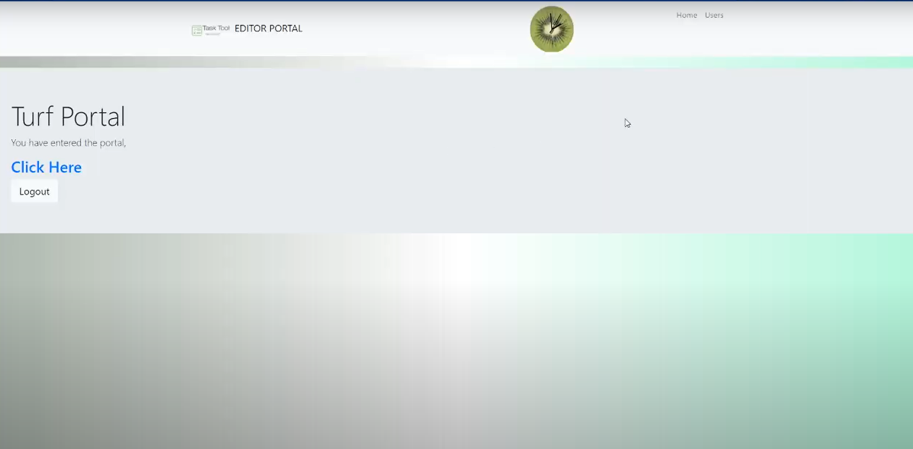
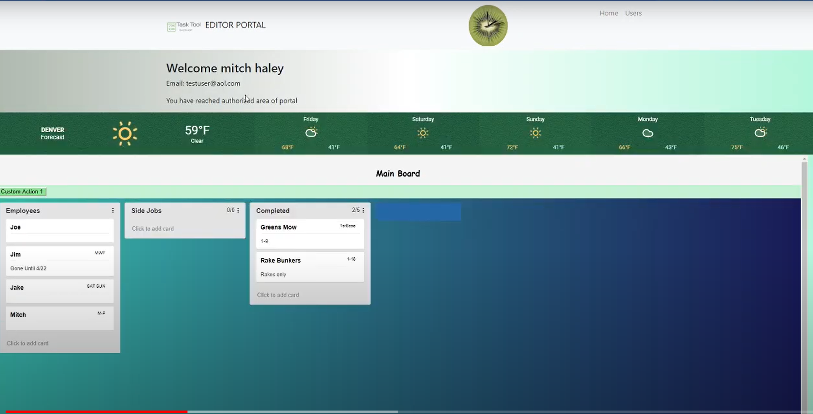

Turf Tool
This project was my senior project for my CIS degree. I took this class the Spring of 2020
The idea behind it was to create a tool for Golf course Superintendents to easily assign tasks to employees. Since I've worked at golf courses for 4 years, I noticed the problem of the superintendents needing to write a bunch of tasks on a white board every morning.
By making an easy-to-use drag-and-drop task assigner, this tool solved the problem.
Figure 1: the login screen you're greeted with
Figure 2: the 3rd party authentication service 'Okta'
Figure 3: The first screen you reach after getting authenticated.
Figure 4: the main application portal
Figure 5: Drag-and-drop and create new lanes
I used code from a pluggable components repository to accomplish the Trello-like application. And used a pluggable weather component for the weather bar.
While it's not the best looking/functioning application. It taught me a lot about how to break down a project into small pieces and how to be resourcful and motivated.